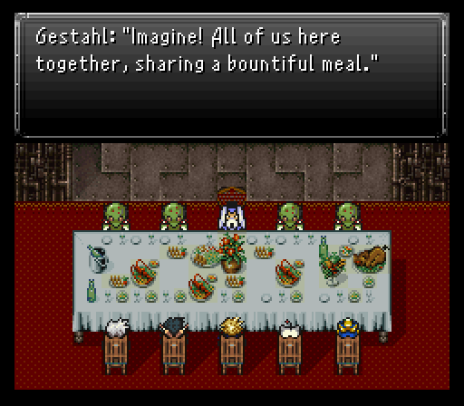
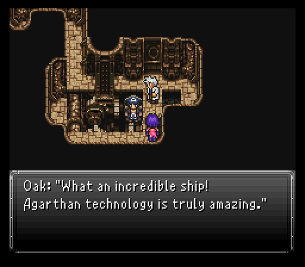
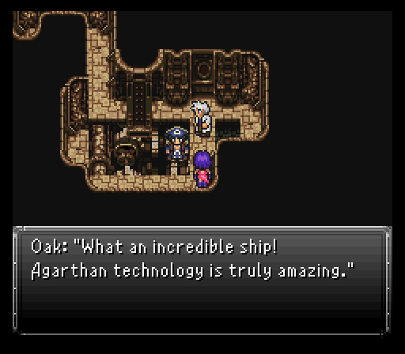
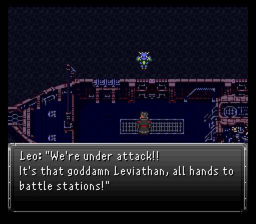
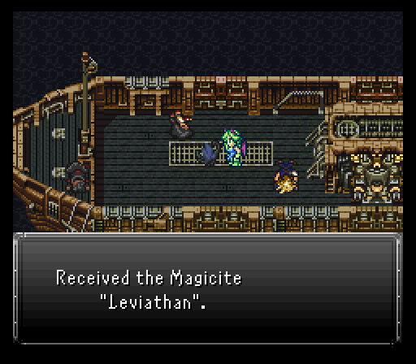

Part 15: Lord of the Sea
Imperial feast:
On the airship, the rowdy espers decide to straight up attack it, causing it to crash on the empire's mainland. After a timeskip since I ended up doing a little wandering to grab a couple things, I'm sitting in front of Ornyx with a different team setup. Cloud and Mog are still around with Arc and Avalon joining them. Everyone but Mog can dual wield weapons, a fact that'll help me with a little task very shortly.
If you step into Ornyx, you'll see the espers have done quite the number on it. Amongst all the Crimson Blades and Fraust Guards, we see our friends Marcus, Warren and Gus. It's good to know that they are alive and well. With the Magitek Research Facility in shambles, that leaves only one last place to go, Blackthorn Palace. The entrance to it is in the northwestern part of town, where we see Astral, Arvis and Oswald.

Shortly after entering, you'll find some curious Reptites who lead you to Gestahl. As he claims, he's done with the whole war business (Totally not a bold faced lie!). He wants to talk it over a banquet, but you'll first get six minutes to talk to some soldiers who'd rather prefer to keep on fighting.
In total, there's 27 soldiers to talk to around the palace. In the original there were 24, but 3 more were added in this mod inside a new room. Some just say a few words, but others would rather fight you first. Most are just singular Commandos which I can drop in one or two actions. The one fight outside the palace though has a pair of Riot Mechas. If you can get to this fight with roughly a minute or so left on the clock, you should be fine to clear it before the timer runs out.
Any time you have left after all 27 soldiers have been talked to can be used to collect treasure around the palace. Mostly consumables, but the good kind of consumables really. You can also just opt to get these treasures after the banquet. And you should probably stay away from Kefka's cell for now as well, as an event will trigger that takes up precious time.
After the timer's up, the banquet takes place. The answers you select here do make a difference for some rewards after it's all done. The choices are no different than vanilla so you can answer, assuming the top choice is #1...
- 1. #3
- 2. #1
- 3. #2
- 4. #2
- 5. Ask each question once
- 6. #1
- 7. Repeat the first question you asked up on the 5th set of choices
- 8. Take a break, then go kick some Reptite behinds. They have some powerful tier 2 magic as well as some nasty status ailments like Primal Rage (berserk) and Rock Barrage (confusion).
- 9. #2
- 10. #1

With all those answers in place, the next major story task is clear...we're to assist the empire in locating these rogue espers and utilizing Aurora to broker a sign of peace between human and esper. Aurora's going, but not alone as Cloud's joining her. Everyone else is going to get ready for Gestahl's inevitable betrayal because no way this is going off smoothly without a hitch.
As Cloud and Aurora try to leave, a Reptite comes up and sounds off all the perks you get for doing so well at the banquet. In total, Seascape Town and Mist Castle will be liberated, you can loot the imperial base near the Underworld, and get two items, a Golden Apple and the very good Prism Cape relic (halves damage from fire, ice, lightning, earth, wind, and water and gives a small boost to defenses).


Be sure to go back into the banquet room and search the spot of the table where Gestahl was sitting for a Lich Ring, which raises magic damage by a considerable amount, but turns the character undead...which can be either good or bad, but mostly bad.
Journey to Lemuria:
The journey to explore Lemuria in greater fashion begins today, but first, Cloud and Aurora take a detour to the Imperial Base. With the basement floor of the building unlocked, they can loot all the treasure there. Lots of high end consumables, a nice chunk of gil, and a Blooddrinker. It could be very possible to win some arena fights that were previously impossible if you setup someone to dual wield this one and the one stolen from Shijima.
 

You can also return to the airship to view a relatively obscure scene with Otis and Prof. Oak. For now though, the duo gets some water resistant gear equipped (Aqua Gear armor for Cloud and Prism Cape relic for Aurora) before heading to Alvantes's docks. There, they'll find a hidden Speed Tab in the southeast before chatting with Leo. He's getting some final preparations in place, including the help of two people, Oboro and Tifa. He then implores you to go rest up before the voyage so head to the inn to get a good night's sleep.
As for Cloud? Well, he realizes that he MIGHT have stepped a bit out of bounds with blindly calling Tifa a traitor, but she just runs away. Perhaps later he might have a better chance at apologizing.
After the night's rest, go back to the docks and tell Leo you're ready to set sail. The journey seems peaceful enough with Aurora talking to Leo about how it feels funny to be working with the same people that once controlled her. Luckily, Leo's not like all of them, even going as far as to say he regrets not doing anything about it all this time.
Oh, and Leo's not exactly full on human. He's gotten some cybernetic implants which are going to be put to the test right away because no boat ride is complete without something wanting to capsize it. Enter the esper Leviathan who's not about to let some pesky humans cross the waters. Not on its watch!
At the very least, you get the chance to modify your gear before starting the battle. Evidently Leviathan also has a sense of honor.
First thing's first...Tifa's joining back up for this fight. If you have any spare equips to give her water resistance or absorption, throw it on her. Otherwise, she'll do fine with a Pod Bracelet to bolster her defenses.
When you're ready to rock, challenge Leviathan. As is tradition for the aquatic lord of the seas, Leviathan opens with Tsunami for some good water AoE damage. Aqua Gears turn it into a heal though so Cloud's pretty safe sitting in the front row for now.

Its other AoE moves consist of El Nino, Magnitude Eight and Avalanche. The latter two are as potent as Tsunami, maybe even a bit more. If you devote at least two people to Cura spam duties, you should be able to heal all or most of the damage up each time they're used.
Besides that there's Splash, Acid Rain, Twin Plasma, Aquatic Breath (water and wind), Swine Song, Entangle, Shock Wave, Dispel, and a chance of Mute when struck by magic.
Finally, Leviathan's physical is nothing special, but Tail Whip can sting quite a bit, especially on frontliners, and it also can be used as a counter when hit by magic.
Tifa's main job is just to spam Cura on the entire party to keep Leviathan's AoE damage at bay. Be careful with using Reels here as Waterkick will restore Leviathan's hp. Cloud can help her out with that or go on the offensive.
As for the other two?
First up, Leo's got two unique commands at his disposal. Blaster lets him either do damage to a target or instantly kill them.
Leo's other command plays into his cybernetic implants, Magitek. He's got all the same abilities that Biggs and Wedge had, meaning solid single target elemental damage, dual Protect/Shell buffs, healing, and revival. He can also use physicals with a weapon not seen thus far, the Dual Breaker, which can proc Energy Blade. For this fight though, he can just spam Thunder Beam for damage and buff up anyone that needs Protect/Shell with Magitek Barrier.
Finally, we have Aurora. She's had a new command since her time out of the party that she actually gets to put to use here, Morph. It's been reworked in this mod so that you can use it anytime, however it takes a sizable chunk of her mp (99 mp cost). While morphed she takes lower magic damage and deals more physical and magical damage herself. This is only a temporary transformation though so you'll want to make sure she's attacking every turn while morphed to make the most of it.
After Leviathan's gotten a big enough beatdown, a cutscene follows between Aurora and the esper. It's not long before Leviathan turns into magicite so the team can make use of its powers.
Right after that, the prediction seen a mile away comes true as Gestahl lets Kefka out of jail and they go to inevitably cause terror once the espers are found.